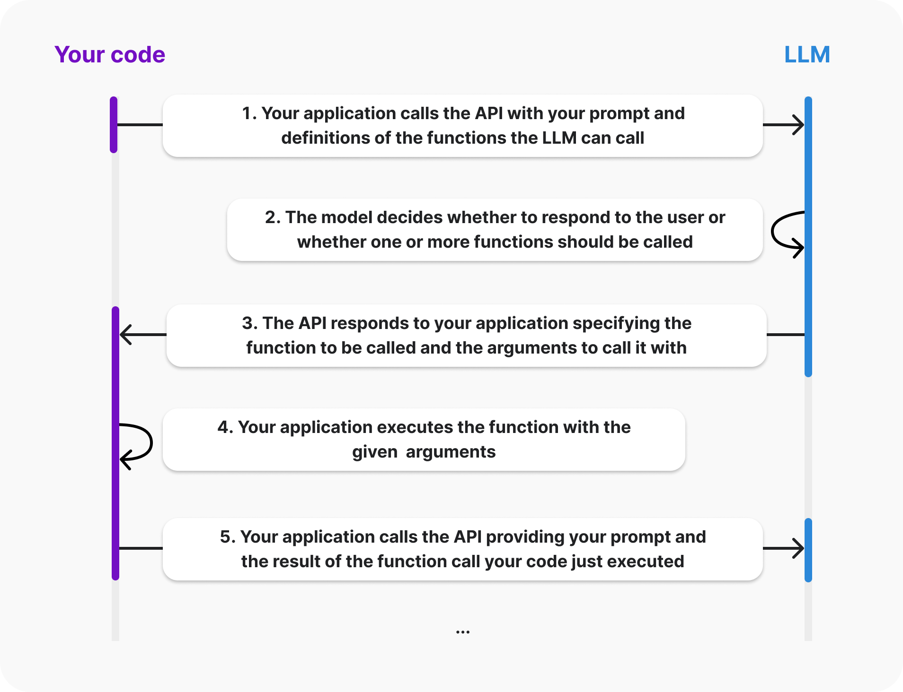

目录索引
- Assistants 5：Function calling
- 基础篇
- 进阶篇
- 7 应该在function的描述（规范）中说明何时调用此函数，还是应该在system prompt中？
- 8 如何确保模型调用正确的函数？
- 9 如何处理特殊情况（Handing edge cases）？
- 10 什么是Structured Outputs？
- 11 Function calling 为什么需要 structured Outputs？
- 12 如何使用 structured Outputs？
- 13 什么是零数据保存，Structured Outputs 会影响零数据保留吗？
- 14. 你可以对function calling的行为进行哪些设置？
- 15 使用Function calling功能时的消耗tokens要注意什么？
- 16 OpenAI推荐的Function calling最佳实践：
- 实战实例
Assistants 5：Function calling
以下内容是根据OpenAI官方资料整理而来。
基础篇
1 Function calling是什么？
Fucntion calling 是将 LLM 链接外部工具的一种方式。
通过它你可以：
- 增强LLM，AI助手的能力
- 将 LLM 与你的应用进行深度整合
2 它可以做什么？
function calling可以帮你完成很多的事情
- 获取外部数据：当用户询问“我的最近订单是什么？”时，AI助手需要从内部系统获取最新的客户数据，才能生成对用户的回应。
- 进行计算：比如可以通过 code interpreter 进行复杂的数学计算。
- 完整的工作流：通过使用function calling可以实现完整的工作流，比如可以实现 从数据读取，LLM数据分析，复杂计算，到最后的数据保存 一个完整的工作流。
- 修改用户界面： 比如，可以根据用户的要求，在地图上渲染一个标记。
3 Function calling 是如何工作的？
下图是一个function calling的工作流程：

处理步骤如下：
- Code：将function描述和要求发送给LLM
- LLM：LLM来确定是直接给答复，还是需要调用function
- LLM：如何要调用function，则返回需要调用的function以及调用function所需要的参数
- Code：程序收到LLM返回后，根据LLM的返回信息，执行 function
- Code：将function执行后得到的结果，以及prompt提示词发送给 LLM
- LLM：LLM产生最终回答
4 LLM 会自己执行 function 吗？
答案是不会，执行function的是你的code，不是LLM。
LLM只是告诉你，需要调用某个function 以及调用 function 时的参数值。
5 function calling与 tools有什么区别？
OpenAI Assistants中提供的有tools和function calling两个工具。
- 其中 tools 可以理解为是托管在OpenAI服务器上的 function，OpenAI会帮助我们来完成处理步骤中的【2，3，4，5】步。
- 而 function calling 是指的本地 function。我们需要在自己的程序中开发调用函数的操作。也就是要完成 1 到 6 的整个流程。
6 有哪些模型支持function calling？
GPT-4系列都支持function calling功能，比如： gpt-4o, gpt-4o-mini, gpt-4-turbo。 另外GPT-3.5也是支持的。
开源模型是否支持，需要查看模型的说明。
进阶篇
7 应该在function的描述（规范）中说明何时调用此函数，还是应该在system prompt中？
OpenAI建议在系统提示词中包含何时调用函数的指令。
函数的描述用来提供如何调用函数以及如何生成参数的指示。
8 如何确保模型调用正确的函数？
为函数和参数使用直观的名称和详细的描述。
在系统消息中提供清晰的指导，以增强模型选择正确函数的能力。
9 如何处理特殊情况（Handing edge cases）？
在使用function calling 时，可能会出现一些特殊情况，比如由于max_tokens的原因，模型被中断响应。
OpenAI列出了一些情况，并提供了处理方法供参考。
具体，请参考：https://platform.openai.com/docs/guides/function-calling
10 什么是Structured Outputs？
结构化输出是一个，确保模型始终生成符合您提供的 JSON 模式的响应，因此您无需担心模型遗漏所需的键或产生无效的枚举值。
结构化输出的一些好处包括：
- 可靠的类型安全性：无需验证或重新尝试格式不正确的响应
- 明确的拒绝：基于安全的模型拒绝现在可以通过程序检测到
- 更简单的提示：无需强烈措辞的提示来实现一致的格式
11 Function calling 为什么需要 structured Outputs？
默认情况下，当您使用函数调用时，API 将为您的参数提供匹配的数据。
但是在使用复杂的fucntion时，比如参数很复杂，模型可能偶尔会遗漏参数或弄错它们的类型。
结构化输出可以确保函数调用的模型输出将完全匹配您提供的架构。
12 如何使用 structured Outputs？
启用函数调用的结构化输出，只需设置 strict: true 即可, 比如下面的例子：
tools = [
{
"type": "function",
"function": {
"name": "get_weather",
"strict": True,
"parameters": {
"type": "object",
"properties": {
"location": {"type": "string"},
"unit": {"type": "string", "enum": ["c", "f"]},
},
"required": ["location", "unit"],
"additionalProperties": False,
},
},
}
]
当你设置 strict：true 之后，OpenAI API 将在您的第一次请求时预处理您提供的架构，并使用此产物来限制模型遵循您的架构。
模型将始终遵循您的确切架构，除了在以下几种情况下：
- 当模型的响应被截断时（可能是由于 max_tokens、停止标记或最大上下文长度）
- 当模型拒绝执行时
- 当有内容过滤器完成原因时
请注意，当您首次使用结构化输出发送新架构的请求时，由于需要处理架构，会有额外的延迟，但后续请求应该不会产生任何额外开销。
13 什么是零数据保存，Structured Outputs 会影响零数据保留吗？
零数据保留是指在处理用户数据时，系统不保留任何用户数据的政策或技术。这意味着数据在使用后立即被删除或根本不被存储，以确保用户的隐私和数据安全。
但是启用结构化输出时，不适用零数据保留政策。这意味着在这种模式下，提供的模式和相关数据不能即刻删除或不被存储，可能会被保留一段时间。
14. 你可以对function calling的行为进行哪些设置？
-
设置并行调用function（也就是在一个response时，可以返回多个function calls）
比如，你希望了解三个城市的天气预报，通过并行函数调用，一次response就可以获取需要执行的函数
处理完整之后，可以将三个城市的结果，反馈给LLM
具体代码，请参考：https://platform.openai.com/docs/guides/function-calling -
函数并行调用与结构化输出冲突时
在使用函数并行时，模型可能不能很好的最从 strict的设置，此时可以通过设置 parallel_tool_calls: false 的方式关闭函数并行调用。 -
通过 tool_choice 来控制是否调用function call
tool_choice 有三种设置：- auto： 由模型自己控制是否调用function
- requried：模型总是调用function
- none：不调用function
- 指定调用的function：例如 tool_choice: {"type": "function", "function": {"name": "my_function"}}
15 使用Function calling功能时的消耗tokens要注意什么？
函数描述，函数调用相关的消息，都会消耗tokens，产生费用。
如果你的消息比较多，可以考虑重新整理过程的消息来减少token的消费。
16 OpenAI推荐的Function calling最佳实践：
- 使用 strict: "true"： 此设置会让模型更好的遵循你提供的json格式。如果不使用此设计，建议使用 Pydantic 等工具做验证。
- 函数命名时应直观且提供详细描述： 如果发现模型没有调用正确的函数，您可能需要更新函数名称和描述，以便模型更清楚地理解何时应选择每个函数。避免使用缩写或首字母缩略词来缩短函数和参数名称。您还可以包括详细描述，说明何时应调用工具。对于复杂的函数，您应该为每个参数包括描述，帮助模型知道它需要向用户询问什么以收集该参数。
- 直观命名函数参数，并提供详细描述： 为函数参数使用清晰和描述性的名称。例如，在描述中指定日期参数的预期格式（例如，YYYY-mm-dd 或 dd/mm/yy）。
- 考虑在系统消息中提供有关如何及何时调用函数的额外信息： 在系统消息中提供清晰的指令可以显著提高模型调用函数的准确性。例如，用类似“当用户询问他们的订单状态时，使用 check_order_status，如‘我的订单在哪里？’或‘我的订单发货了吗？’”这样的指示引导模型。为复杂情景提供上下文，如“在使用 schedule_meeting 安排会议前，先使用 check_availability 检查用户的日历以确认可用性，避免时间冲突。”
- 使用枚举类型作为函数参数： 如果您的使用场景允许，可以使用枚举类型来约束参数的可能值。这可以帮助减少幻觉现象。
- 函数数量不超过20个： 开发者通常会发现，一旦他们拥有10到20个工具，模型选择正确工具的能力会有所下降。 如果您的使用案例需要模型能够在大量函数之间进行选择，您可能需要探索微调，或者将工具进行逻辑分组，以创建多代理系统。
- 设置评估，作为您函数定义和系统消息的提示工程的辅助 我们建议对于非平凡的函数调用用途，您应该设置一套评估，以便您能够测量在各种可能的用户消息中正确的函数被调用或正确的参数被生成的频率。了解更多关于在OpenAI Cookbook上设置评估的信息。然后，您可以使用这些评估来衡量对您的函数定义和系统消息进行调整是提高还是降低了您的集成效果。
- 微调可能有助于提高函数调用的准确性： 对模型进行微调可以改善您使用案例中的函数调用性能，特别是如果您有大量函数，或者功能复杂、微妙或相似的函数。
实战实例
本实战为你演示如何通过 function calling 功能来调用自定义函数。
- Step1：设置OpenAI API Key
import os
os.environ["OPENAI_API_KEY"]="xxxxxxxxxxxxxxxxxxx"
- Step2： 自定义一个函数
from datetime import datetime
def get_delivery_date(order_id: int) -> datetime:
if order_id == 1:
return datetime.strptime("2024-09-01 18:30", "%Y-%m-%d %H:%M")
elif order_id == 2:
return datetime.strptime("2024-10-20 12:00", "%Y-%m-%d %H:%M")
else:
return f"cannot find order_id {order_id}"
# Example usage
print(get_delivery_date(1))
- Step3：写函数的描述
tools = [
{
"type": "function",
"function": {
"name": "get_delivery_date",
"description": "Get the delivery date for a customer's order. Call this whenever you need to know the delivery date, for example when a customer asks 'Where is my package'",
"parameters": {
"type": "object",
"properties": {
"order_id": {
"type": "string",
"description": "The customer's order ID.",
},
},
"required": ["order_id"],
"additionalProperties": False,
},
}
}
]
- Step4: 与LLM对话
import openai
tools = [
{
"type": "function",
"function": {
"name": "get_delivery_date",
"description": "Get the delivery date for a customer's order. Call this whenever you need to know the delivery date, for example when a customer asks 'Where is my package'",
"parameters": {
"type": "object",
"properties": {
"order_id": {
"type": "string",
"description": "The customer's order ID.",
},
},
"required": ["order_id"],
"additionalProperties": False,
},
}
}
]
messages = [
{"role": "system", "content": "You are a helpful customer support assistant. Use the supplied tools to assist the user."},
{"role": "user", "content": "Hi, can you tell me the delivery date for my order?"}
]
messages.append({"role": "assistant", "content": "Hi there! I can help with that. Can you please provide your order ID?"})
messages.append({"role": "user", "content": "i think it is 1"})
response = openai.chat.completions.create(
model="gpt-4o",
messages=messages,
tools=tools,
)
- Step5: 本地执行函数
import json
tool_call = response.choices[0].message.tool_calls[0]
#获取函数名称
func_name = tool_call.function.name
print(func_name)
#获取参数
arguments = json.loads(tool_call.function.arguments)
order_id = arguments.get('order_id')
print(order_id)
# 执行函数
if func_name=="get_delivery_date":
delivery_date = get_delivery_date(int(order_id))
print(delivery_date)
- Step6： 准备function call相关的messages
# 准备function执行后返回的结果（role 为 tool ）
msg_function_call_result = {
"role": "tool",
"content": json.dumps({
"order_id": order_id,
"delivery_date": delivery_date.strftime('%Y-%m-%d %H:%M:%S')
}),
"tool_call_id": response.choices[0].message.tool_calls[0].id
}
- Step7：将函数执行结果提交给LLM， 产生最终的解答
import openai
tools = [
{
"type": "function",
"function": {
"name": "get_delivery_date",
"description": "Get the delivery date for a customer's order. Call this whenever you need to know the delivery date, for example when a customer asks 'Where is my package'",
"parameters": {
"type": "object",
"properties": {
"order_id": {
"type": "string",
"description": "The customer's order ID.",
},
},
"required": ["order_id"],
"additionalProperties": False,
},
}
}
]
messages = [
{"role": "system", "content": "You are a helpful customer support assistant. Use the supplied tools to assist the user."},
{"role": "user", "content": "Hi, can you tell me the delivery date for my order?"}
]
messages.append({"role": "assistant", "content": "Hi there! I can help with that. Can you please provide your order ID?"})
messages.append({"role": "user", "content": "i think it is 1"})
messages.append(response.choices[0].message)
messages.append(msg_function_call_result)
response_final = openai.chat.completions.create(
model="gpt-4o",
messages=messages,
tools=tools,
)